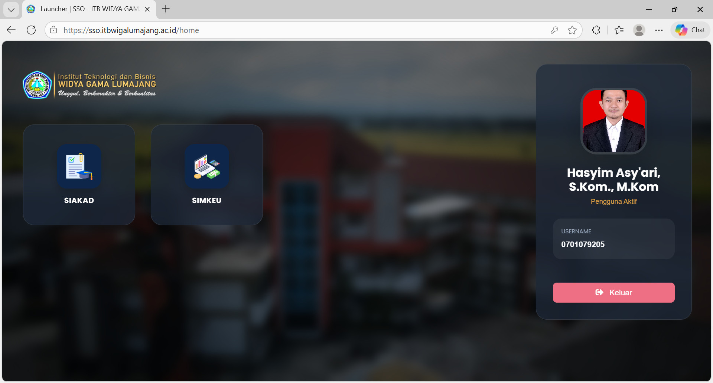

Wiga Mobile merupakan aplikasi sistem informasi terintegrasi yang dikembangkan secara mandiri oleh tim IT Institut Teknologi dan Bisnis Widya Gama Lumajang yang secara resmi diluncurkan pada tanggal 12 Desember 2025 dan secara aktif diterapkan pada periode genap tahun akademik 2025/2026 sebagai wujud komitmen institusi dalam mewujudkan transformasi digital kampus yang berkelanjutan.
Pengembangan Wiga Mobile telah dirancang secara strategis sejak bulan september tahun 2023, diawali dengan pembangunan fondasi sistem inti kampus yang mencakup Sistem Informasi Keuangan, Digital Signature, Single Sign On (SSO), serta Sistem Informasi Akademik. Fondasi ini dikembangkan untuk memastikan keamanan data, efisiensi proses, dan kemudahan akses bagi seluruh civitas akademika.
Wiga Mobile tidak hanya berfungsi sebagai aplikasi, melainkan sebagai ekosistem digital kampus yang mengintegrasikan berbagai layanan dan sistem informasi dalam satu platform terpadu. Ke depan, Wiga Mobile direncanakan untuk terus dikembangkan dengan mengintegrasikan berbagai sistem pendukung lainnya, antara lain Sistem Informasi Kepegawaian, Inventory, Tracert Study, E-Quality, E-Class / Learning Management System, Akreditasi, E-Resource, E-statistik serta layanan digital kampus lainnya yang mendukung proses akademik, administrasi, dan pengambilan keputusan berbasis data.
Melalui satu identitas dan satu akses, Wiga Mobile menghadirkan pengalaman digital yang lebih sederhana, terukur, dan efisien, sekaligus menjadi fondasi bagi terwujudnya kampus cerdas, modern, dan adaptif terhadap perkembangan teknologi.

Untuk memulai menggunakan aplikasi Wiga Mobile baik dengan menggunakan Laptop maupun Smartphone, caranya cukup akses alamat url https://sso.itbwigalumajang.ac.id melalui aplikasi web browser yang tersedia.

Untuk mempermudah apabila menggunakan smartphone, tambahkan shortcut dengan menekan Install saat pertama kali mengakses Wiga Mobile.
Setelah berhasil login, tampilan pertama adalah ekosistem aplikasi yang nantikan akan dikembangkan secara bertahap.
